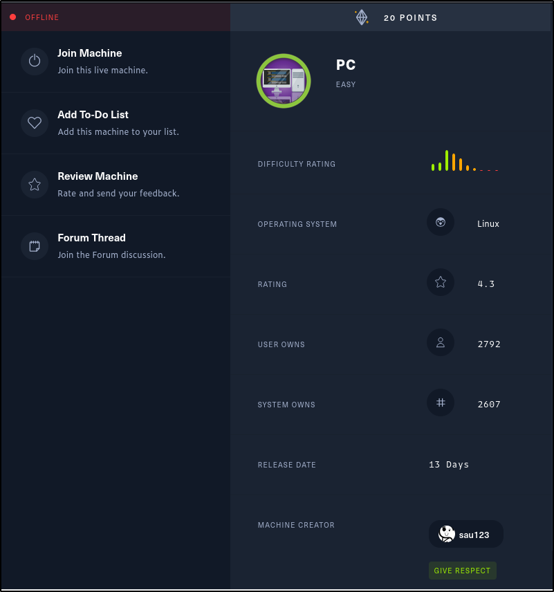

Let's start off with a port scan

That port seems strange let's see if we can connect to it.


Guess its time to ask Google...


This looks interesting but how can we connect to a gRPC server... Eventually I stumbled across these.


Lets try connecting using grpcui.

Let's try logging in using admin:admin and click invoke to send the request.

Inside the response tab we see a message with an id # of 587 along with a token

Now lets send another request


The box was reset in the middle of the writeup so I had to repeat the above steps and the id # changed..
Let's continue, first turn on foxyproxy then open up burp suite and capture that getInfo request again.


and we get the same response message, **Will update soon**.
Right click on the request and copy to file. Save this file and name it whatever you want .req (ex: burp.req)

We can test to see the id parameter is vulnerable to SQLI (sql injection) using our saved request and a tool called sqlmap.


Now lets dump the database info...

And we get a new message along with 2 usernames and passwords that are stored in this database.

Let's try to login to this new user.


And we are in and got the user.txt flag, next step is to escalate our privileges.
Started to look for low hanging privesc's manually.


Ok we can use LinPEAS to enumerate this system faster...


Let's see whats on 127.0.0.1:8000 we can forward the port over to a port on our machine..

now if we goto 127.0.0.1:9000 in our web browser

Searching on google for pyload exploit we see a few


we will copy this exploit to our notes

if we head back to the pyload login page on our machine and intercept a login request we can insert our exploit

Right click and send to repeater, turn intercept off then head to the repeater tab.
We will modify this request with our exploit

If we cd to /tmp we can see that our payload went through and the root user created a file called pwnd.

Time to add a reverse shell into our payload instead of creating a file. Start a netcat listener.

We can use revshells.com to generate the reverse shell payload, just enter your ip and port #.

**You will have to url encode the `&` (%26) and add a `+` to any spaces inside our revshell payload.**
The finished exploit will look like this, click send.

And if we check our netcat listener we have a root shell. Time to get our last flag.